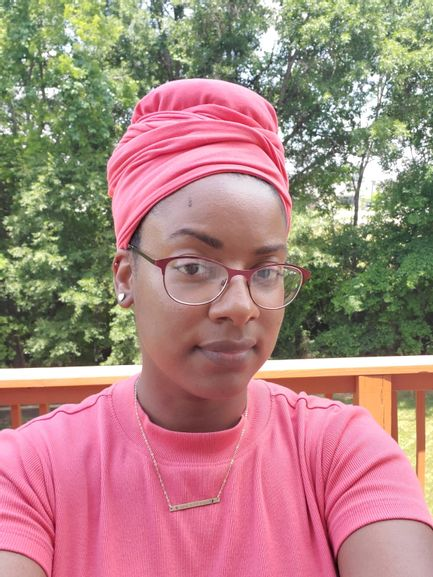

Welcome to My Website
Hello, my name is Kristy! I was born and raised in Maryland but currently live in South Carolina. I love art, technology, and traveling.
Places I've been
- Okinawa, Japan
- Bali, Indonesia
- Taipei, Taiwan
- Phuket, Thailand
- Bangkok, Thailand
- Incheon, South Korea
I have a background in Digital Art, 3d Modeling and animation, and IT Helpdesk Support. Right now I am interested in Software Testing and Quality Engineering.
I love research and asking questions to get deep into the why's and how's of how things work. When it comes to being on a team I would describe my role as healer or support. I love helping others and work well to enhance and buff my team for the win.